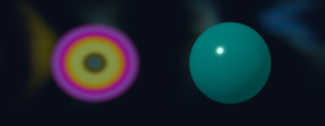

Chromatic intelligence
sRGB/XYZ, CIELAB, Oklab/Oklch, two-interface Airy thin-film optical interference at RGB wavelengths, and WCAG 2.1 AA/AAA contrast checks.
Frontend Studio & Chromatic Intelligence
Perceptual Oklab/Oklch colour spaces, thin-film optical interference, analytic 3D GGX/Schlick surface shading, damped springs, and deterministic 2D physics.
PEACOCK has an original 2D software renderer, thin-film chromatic intelligence, analytic 3D surface shading and motion/physics libraries.
sRGB/XYZ, CIELAB, Oklab/Oklch, two-interface Airy thin-film optical interference at RGB wavelengths, and WCAG 2.1 AA/AAA contrast checks.
Premultiplied linear-light RGBA, Porter-Duff compositing, 4x4 AA shapes, peacock-feather ocellus rings, and analytic 3D sphere GGX/Schlick metallic-roughness shading.
Easing, damped springs, keyframe timelines, flex layout and 2D AABB physics are deterministic libraries.
General widgets, text shaping, native accessibility runtime, polygon-mesh 3D scene graphs, GPU rasterisation and platform input remain roadmap work.

Thin-film normal (0 deg, 280nm): rgb(149 116 21) | grazing (cos=0.35, 280nm): rgb(89 152 140) | Ink/BG WCAG contrast: 17.45:1 (AAA=true) | ease_out_cubic(0.5)=0.875 | spring[5]=0.3796
website/site.pac builds a component tree, escapes text and attributes, computes chromatic/motion telemetry, renders PNG graphics and emits accessible static HTML and responsive CSS through the fs capability.
Reusable UiNode, Page, card, section, status and code-panel components are defined in .pac.
A shared renderer creates page links and marks the current route with aria-current; every page is a separate HTML route.
The bootstrap runs the .pac program; the browser renders generated semantic HTML/CSS and PEACOCK-encoded PNG/SVG assets. No JavaScript or external UI framework is generated.
This site generator is a real PEACOCK application, not a claim that interactive native UI or a polygon-mesh 3D engine has shipped.
The snippets below are read from the tested example sources during the site build.
Selectable source — use your browser's copy command. · SHA-256: 826d859a751e4f4f
// Deterministic procedural colour: render an aurora to a real PNG.
module aurora
use colour
use graphics
fn main() -> Unit {
capability fs;
let canvas = graphics.canvas(960, 540);
let palette = [
colour.oklch(0.55, 0.18, 160.0),
colour.oklch(0.72, 0.20, 285.0),
colour.oklch(0.62, 0.16, 60.0)
];
graphics.gradient(canvas, palette, 35.0);
graphics.aurora(canvas, 1.5, 42);
graphics.save(canvas, "examples/out/aurora.png");
print("wrote examples/out/aurora.png");
}
Selectable source — use your browser's copy command. · SHA-256: 93d168c41a363c93
// Motion primitives: spring integration and easing, computed by PEACOCK.
module motion_demo
use motion
fn main() -> Unit {
let values = motion.spring_steps(0.0, 100.0, 170.0, 26.0, 90, 0.016666666666666666);
print("spring samples: " + str(len(values)));
print("first: " + str(values.get(0)));
print("last: " + str(values.get(89)));
print("ease in-out cubic at 0.5: " + str(motion.ease("ease_in_out_cubic", 0.5)));
print("ease out back at 0.5: " + str(motion.ease("ease_out_back", 0.5)));
}